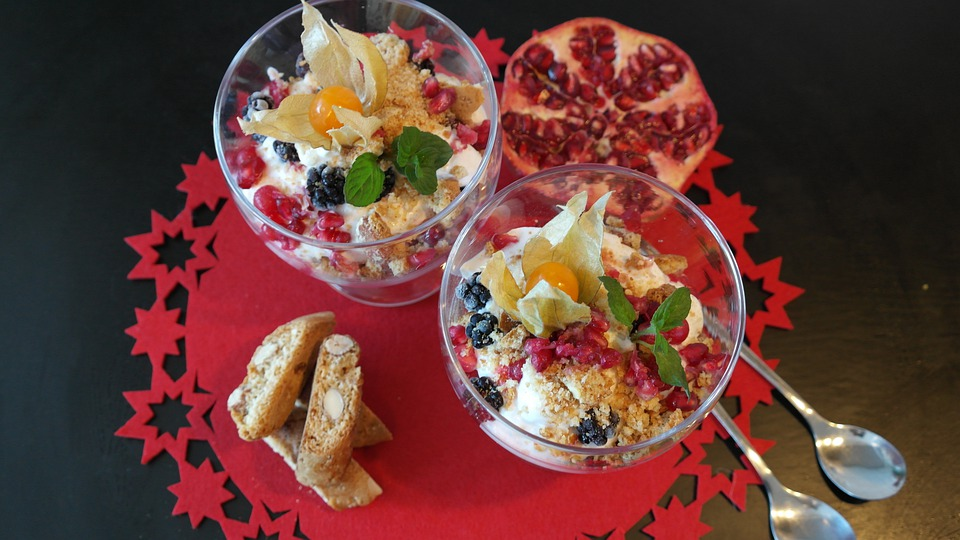
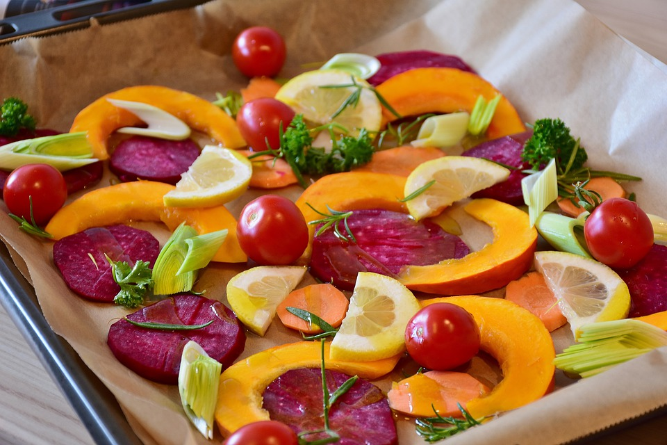
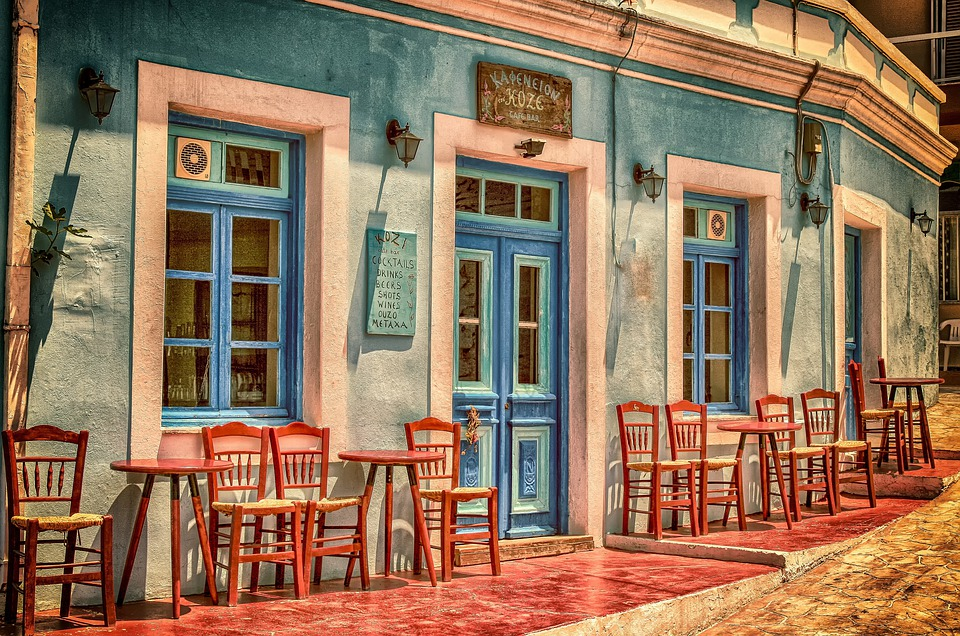

Een gezond voedingspatroon is een voedingspraktijk die de algehele gezondheid helpt behouden of verbeteren.
Een goede voeding voorziet het lichaam van de essentiële voedingsstoffen: vocht, essentiële aminozuren van eiwitten, vetzuren, vitamines, mineralen en voldoende calorieën. Aan een gezond voedingspatroon kan worden voldaan door een verscheidenheid aan voedingsmiddelen van plantaardige of dierlijke oorsprong. Het levert de nodige energie zonder bloot te stellen aan toxiciteit of overmatige gewichtstoename als gevolg van overmatig verbruik. Gezonde voeding (naast lichaamsbeweging) is ook belangrijk om gezondheidsrisico's, zoals overgewicht, hartaandoeningen, diabetes type 2, hoge bloeddruk en kanker te verminderen.
  | Groente | Fruit | Vlees | Zuivel | Overig |
|---|---|---|---|---|
| Broccoli | Appels | Kalkoenfilet | Boter | Volkoren pasta |
| Spruitjes | Abrikozen | Varkenshaas | Kwark | Zalm |
| Avocado | Bananen | Kipfilet | Hangop | Havermout |
| Wortelen | Bessen | Runderbiefstuk | Kaas | Bosvruchten |
| Zoete aardappels | Sinaasappels | Bieflappen | Yoghurt | Rijst |